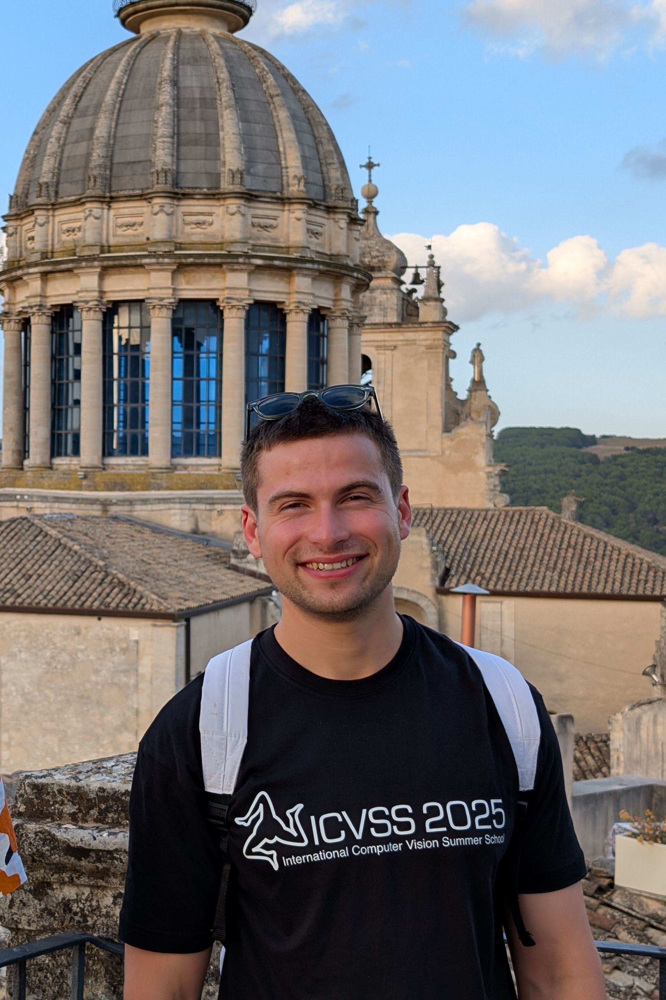

I work on differentiable rendering, SLAM, on-sensor vision, computer architecture, and compiler design. Supervised by Paul H. J. Kelly and Andrew J. Davison.
Differentiable rendering, compilers, on-sensor vision.
Built an MLIR-based tool that auto-generates instruction-set-simulator state transition functions from an accelerator design (Verilog/Chisel → CIRCT → MLIR). Presented as a poster at EuroLLVM 2024.
Scheduling model for the IPU backend in TableGen/C++, and an MIR pass that removed register hazard bubbles. Reduced cycle count by up to 30% on client code. llvm-mca support and objdump work.
Visual Computing & Robotics, first-class honours. Thesis: 3D Gaussian Splatting on a Graph Processor. Supervised by Andrew J. Davison, awarded the Corporate Partnership Prize for Technical Innovation.
TA and marker for Imperial Robotics (3rd year & MSc) and Advanced Computer Architecture (3rd & 4th year). Poster presenter at EuroLLVM 2024 and REACH 2024. Volunteered for EGSR 2024. Attended ICVSS 2025. Also attended PAISS 2025 and ACACES 2024 (both grant-awarded).
English is my mother tongue but I speak fluent French and have working knowledge of Spanish and Portuguese.